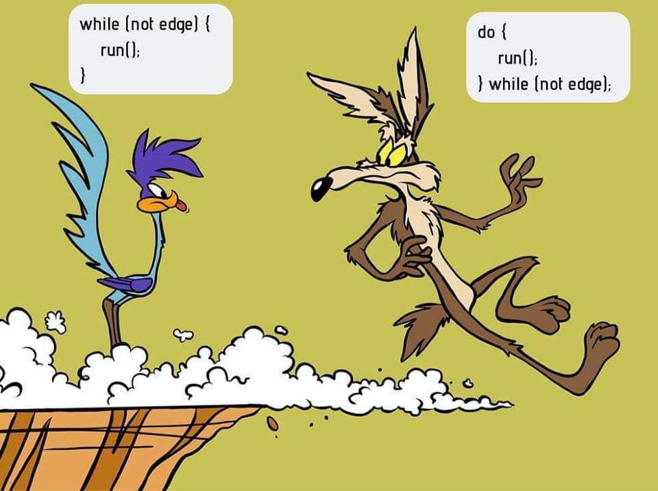

Course Recap#
Here’s a list of things that I wish everyone could remember from an introductory programming course. Software is not written only to compile and run. It must be written so that others can read and maintain it. Those others include yourself 6 or more months after you wrote the program. The items below have been written with Java in mind. They apply to other languages as well.
The 80/20 rule in programming#
Delayed programming, is good programming! Spend some time thinking before you start writing code. Spending 80% of your time analyzing the problem you need to solve, leads to a very productive 20% of your time writing good code!
Document your analysis#
Use comments in the program to describe the analysis that led to the solution you are implementing.
Naming things#
Phil Karlton, an iconic programmer and computer pioneer said that there are only two hard things in Computer Science: cache invalidation and naming things. I am not so sure about the first thing but I am absolutely certain that naming variables, methods, etc, can be challenging. Style guides can be helpful and worth reading.
(Karlton’s aphorism has been verified by his son David, in a StackExchange post dated 8/10/2017).
Strings#
Know a few important string methods and also be familiar with the documentation of the String class. At the very least, be familiar with methods like length(), charAt(), substring(), and indexOf. Be able to explain the difference:
String s1 = "Hello World"; // Between this assignment,
String s2 = "Hello World"; // this assignment, and
String s3 = new String("Hello World"); // this assignment.
Arrays#
Know how to perform simple array operations – even though they can be performed easily by using the Arrays class. You should be able to write a few lines of code to do the following, from scratch (without the Arrays class):
Find the smallest value in an array;
find the largest value in an array;
find the average value in an array of numbers;
find if a value exists in an array (without using a for loop).
The break and continue statements#
Should never be used. Unless you can write a 1000 word justification for their need.
Remember a few useful techniques#
The following are a few simple programming techniques that are worth memorizing.
Swap values of two variables#
To swap the values of two variables a and b, we need to introduce a third, temporary variable.
temporary = a
a = b
b = temporary
Ternary operator#
The ternary operator ?:, is a compact form of the if-else statement. For example, consider the code below.
String parity; // This can also be written as:
if (n%2 == 0) // String parity = "Odd";
parity = "Even" // if (n%2 == 0)
else // parity = "Even";
parity = "Odd"; //
The same result is possible with a single-line assignment that uses the ternary operator:
String parity = (n%2 == 0) ? "Even" : "Odd";
Cumulative operations#
There are two basic types of cumulative operations: additive and multiplicative. The additive operation has the following pattern.
int accumulator = 0; // often renamed to sum
while (someCondition)
accumulator = accumulator + someValue;
In the multiplicative operation, the pattern changes to:
int accumulator = 1; // often renamed to product or prod
while (someCondition)
accumulator = accumulator * someValue;
The examples above use int data types. They will work with any kind of numeric data. The additive operation also works with strings. The + between two strings is the concatenation operator. The while-loops above can be replaced with for-loops, as needed.
Cast if you must – and only then#
Casting between types is, sometimes, a sign of poor design. For example,
double preciseValue;
// some awesome computing later ...
int simpleValue = (int) preciseValue;
may suggest some poor planning prior to implementing the code. There are, however, instances when casting is unavoidable and practical. Consider, for example, computing the average value of numbers stored in an int array; let’s call it a. My preferred technique is the following:
int sum = 0; // Notice that we have a
for (int i = 0; i < a.length; i++) // practical application of
sum = sum + a[i]; // a cumulative operation here!
double average = ((double) sum) / ((double) a.length);
sum and a.length are int values. It suffices to cast only one of them to double, so why the dual casting above? Eitherdouble average = sum / ((double) a.length); ordouble average = ((double) sum) / a.length; would have sufficed. However, by casting them both as doubles I leave no doubt, about my intentions here.while and for loops#
When to use one instead of the other? My simple rule of thumb is this: use for loops if you know in advance how many iterations you need; or you can easily calculate how many iterations you need. And use the while loop when you don’t know in advance how many iterations you need or there is no way to compute them.
For example, to count how many times a value appears in an array a, we have to look at every element of the array. We know, in advance that we need a.length iterations. This is a good case for a for loop. Or, if we want to print numbers in some sequence; for example, the first 10 odd numbers:
int N = 10;
for (int n = 0; n < N; n++)
System.out.println(2*n+1);
On the other hand, to tell if a value is merely present in the array, we need to check every element of the array until we find a matching value or until we reach the end of the array. This is a good case for a while loop.
The difference between while and do-while loops#

An excellent illustration of the difference between while and do loops. The best attribution I have for this image is a 2018 post in the ProgrammerHumor Reddit thread.#
The for and while loops cover all of our needs for repeating and iterating tasks. Why do we need a third kind of a loop mechanism? And so similar to an existing one? As the cartoon to the right shows, there is one key difference between the do loop and the while loop. The do loop always executes at least one iteration. The while loop may not execute at all.
To illustrate this difference, consider the following code:
boolean condition = false;
while (condition) {
System.out.println("I am the while loop!");
}
do {
System.out.println("I am the do loop!");
} while (condition);
The output of the code above will be:
I am the do loop!
Let’s consider a scenario where the do loop is actually useful. We’ll start with the following code that employs a while loop. This silly code keeps asking for a number and stops users enter 50 or greater.
Scanner sc = new Scanner(System.in);
System.out.println("Enter an integer number: ");
int n = sc.nextInt();
while (n < 50) {
System.out.println("Enter an integer number: ");
n = sc.nextInt();
}
System.out.println("Finally! You entered a number greater than 50.");
Now, let’s do the same with a do loop:
Scanner sc = new Scanner(System.in);
do {
System.out.println("Enter an integer number: ");
int n = sc.nextInt()
} while (n < 50);
System.out.println("Finally! You entered a number greater than 50.");
With the while loop, we need to obtain a value both outside and inside the loop, to carry on with our program. The do loop simplifies things because it does not require a value obtained outside itself.
Boolean variables are versatile#
Early in their development, programmers seem to be more comfortable with boolean expressions than boolean variables. For example, a programmer may prefer to write code like the following:
if ((temperature > 80 && humidity > 65 && windSpeed < 5) || (temperature < 5))
System.out.println("Better stay inside.")
than
boolean isHot = temperature > 80;
boolean isHumid = humidity > 65;
boolean isCalm = windSpeed < 5;
boolean isFrigid = temperature < 5;
if ((isHot && isHumid && isCalm) || isFrigid)
System.out.println("Better stay inside.")
Boolean variables can improve the readability of the code. They are definitely worth using.
The equal-to operator == and boolean variables#
if (someBooleanVariable == true) orif (someOtherBooleanVariable == false).if (someBooleanVariable) andif (!someOtherBooleanVariable) respectively.Sequential traversal with option to stop early#
This technique allows us to search for something in a sequential fashion. Consider an array with names, e.g., String[] names, in which we wish to find if the name "Java" is present. A naive search may look like this:
boolean found = false;
for (int i = 0; i < names.length; i++)
if (names[i].equals("Java"))
found = true;
Let’s say that the name "Java" happens to be the first element of the array. We won’t know if the the name is present in the array until the loop above ends. Do we really need to wait for the loop to process every element of the array after it finds what we are looking for? How about the more efficient approach below?
boolean found = false;
int i = 0;
while (!found && i < names.length) {
found = names[i].equals("Java");
i++;
}
The while loop above stops when a match is found or when it reaches the end of the array. Because the loop stops as soon as it finds a match, it is a bit faster than a for loop as long as there is a match to be found and it’s not in the last element of the array.
Sentinel values#
Sentinel values signal the end of a loop or the unsuccessful conclusion of some process. To illustrate a sentinel value as a signal of an unsuccessful process, let’s expand the example above where we look for a specific word in a string array. Only this time we are interested not only in the presence (or absence) of that word, but also in its location within the array. And what if the word does not exist in the array? What will be the resulting position? That’s where a sentinel value comes handy: we declare that -1 will indicate the absence of the word.
int location = -1; // Assume word is not present
int i = 0; // index for array
while (location < 0 && i < names.length) {
if (names[i].equals("Java"))
location = i; // This will end loop
i++;
}
If, at the end of the loop above, location > -1, the word we are looking for ("Java", in this example) is at names[location]. If the value of location is still -1, the word is not present in the array.
Sentinel values can be used to end a repetitive process. For example, consider the following snippet.
Scanner sc = new Scanner(System.in);
String terminate = "---";
String input = "";
while (!input.equals(terminate)) {
input = sc.next();
// do some stuff
}
The loop above ends when the user enters the string "---"`. This string is the sentinel value that we are watching for, and when we detect it, we know it’s time to end the repetitive cycle.
Off-by-one errors (fencepost)#
These errors arise from the difference between spans and counts. For example, the span between the numbers 8 and 11 is 3; but the count of numbers between 8 and 11 is 4. Spans and counts are off-by-one. Usually, this is not a big deal, but it can be quite annoying when using loops and expect some uniformity in the appearance of our data. For example:
int N = 10
for (int i = 0; i < N; i++) {
System.out.print(i+", ")
}
The code above will result in:
0, 1, 2, 3, 4, 5, 6, 7, 8, 9,
That dangling comma at the end of the output is pretty annoying. The number of commas needed in the output is off-by-one from the span of the output. We print 10 numbers but we need only 10-1 commas. To get rid of off-by-one errors (also known as fencepost errors), we need to modify our code as follows:
int start = 0;
int finish = 10
for (int i = start; i < finish-1; i++)
System.out.print(i+", ")
System.out.print(finish-1);
In the modified code above, the loop terminating condition was revised from i < finish to i < finish-1. And a print statement was added outside the loop to print the last number (finish-1), without a comma after it. The same result can be obtained by adjusting the beginning of the loop:
int start = 0;
int finish = 10
System.out.print(start)
for (int i = start+1; i < finish; i++)
System.out.print(", "+i);
printf instead of print or println#
Printing information with the println command is quick and therefore convenient. Together with the plain print command, programmers can separate the output across multiple lines. And that’s as much control they have over the appearance of the output.
The formatted print command, printf offers significantly more control over the output of the program. Admittedly, the command can be intimidating in the beginning, but it is worth the effort. First, because the flexibility it offers and second because once we learn how to use it, we can transfer the skill to other programming languages.
Start with a simple program like the one below.
for (int n = 0; n < 10; n++)
System.out.println(n + " " + n*n + " " + Math.sqrt(n));
Then try the following program.
for (int n = 0; n < 10; n++)
System.out.printf("%5d %6d %8.4f", n, n*n, Math.sqrt(n));
Notice the difference? Try again the program with the printf statement, changing the valued inside its formatting string; for example, try %10d instead of %5d. And, as
you begin to develop familiarity with simple formatted output, begin reading the formatting documentation from Java.
Pulling digits out of an integer#
int n = 1234;String s = String.valueOf(n);
for (int i = s.length()-1; i >= 0; i--)
System.out.println(s.charAt(i));
And yet, it is a matter of programmer’s pride if we can accomplish the same numerically:
while (n > 0) { // while the number has digits left
int digit = n % 10; // pull out the right-most digit
System.out.println(digit);
n /= 10; // throw away the right-most digit
} // note: this only works with integer numbers
Enhanced for-loop#
Given an array of objects, for example a String[] words, we can process each of its elements using the plain old for-loop:
for (int i = 0; i < words.length; i++) {
System.out.println(words[i]);
}
Alternatively, and more elegantly, we can use the enhanced for loop:
for (String w: words) {
System.out.println(w);
}